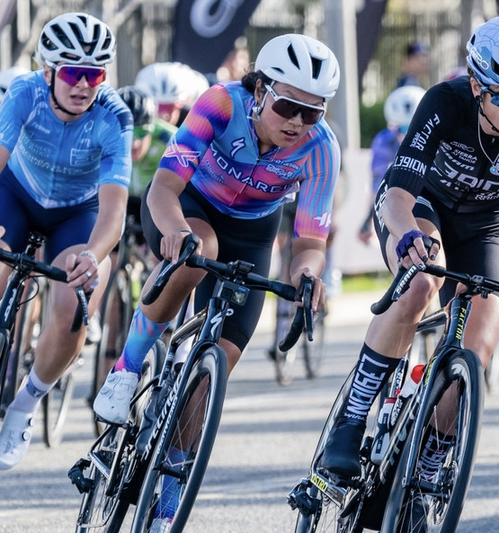
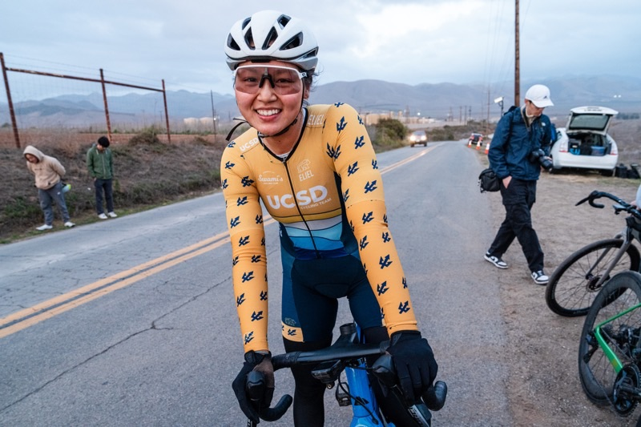
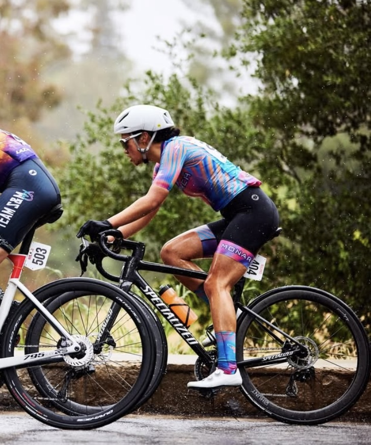

WWW ’26
Understanding Server-side Commercial Fingerprinting
Elisa Luo, Tom Ritter, Stefan Savage, Geoff Voelker. ACM Web Conference 2026 (WWW 2026). To appear.
I’m a PhD student at UC San Diego, advised by Stefan Savage and Geoff Voelker, working on empirical security and privacy measurement, with a recent focus on commercial browser fingerprinting and modern Web tracking in practice.
Can usually be found reverse-engineering something new, racing bikes, or eating oatmeal.
Elisa Luo, Tom Ritter, Stefan Savage, Geoff Voelker. ACM Web Conference 2026 (WWW 2026). To appear.
Elisa Luo, Tom Ritter, Stefan Savage, Geoff Voelker. ACM Internet Measurement Conference 2025 (IMC 2025).
Enze Liu*, Elisa Luo*, Shawn Shan, Geoffrey M. Voelker, Ben Y. Zhao, Stefan Savage. ACM Internet Measurement Conference 2025 (IMC 2025). *Equal contribution.
Grant Ho, Ariana Mirian, Elisa Luo, Khang Tong, Euyhyun Lee, Lin Liu, Christopher A. Longhurst, Christian Dameff, Stefan Savage, Geoffrey M. Voelker. IEEE Symposium on Security and Privacy 2025 (S&P 2025).
Elisa Luo, Liane Young, Grant Ho, M. H. Afifi, Marco Schweighauser, Ethan Katz-Bassett, Asaf Cidon. Passive and Active Measurement Conference 2025 (PAM 2025).
“Characterizing Canvas Fingerprinting Across the Web.”
Outside the lab, I’m a semi-pro cyclist racing for Monarch Racing this year, and a former Division I rower at Columbia.


